Ethereal Jungle

the Ethereal Jungle is a Primordial 类型 生物群系 that can be found on 多种星球 in 绝地潜兵 2.
描述
“这颗星球表面布满了缥缈、奇特的植物，营造出无限蔓延的静谧感。
The Ethereal Jungle is the pink colored triplet of the 火山 Jungle and the Ionic Jungle primordial biomes.
Like the other primordial biomes, the Ethereal Jungle features dense jungles full of trees, plants and ferns, all of them having ping and crimson leaves. Large clearings also fill the 浮出地面, full of an odd pink grass, flowers and rock formations. The 行星 also features beaches, oceans, the occasional lake full of a teal-colored water, as well as distant 山 ranges.
The skies are 通常 pink during the day, and become a dark magenta at night. The skies are also mostly clear, and the stars can be seen from the 浮出地面 during the day.
Pink dots float around the 浮出地面, as well as odd white flowers/insects similar to the blooms of a blown dandelion.
部分星球 tend to orbit near- or around a large 行星 with red glowing rings.
浮出地面 Variations
Metropolises
In parks located in Metropolises, green grassy 地形 can be found with pink grass blades growing out of it. The usual pink grass found on the 行星 can also rarely also generate, though it features no grass blades whatsoever. While the 行星 has trees, pink Earth-like trees will generate. Along with the trees, city plants and foliage will be colored either pink, purple or orange.
Environmental Conditions
This 生物群系 has no Environmental Conditions.
环境危害
- Spike Plants that will 爆炸 into tiny pieces much like the G-6 Frag 手榴弹, if it takes any 伤害.
- Lava Pits will kill any 绝地潜兵 unlucky enough to fall inside.
- Slowing ferns can also commonly be found across the 浮出地面, especially near rock formations and in denser jungles.
天气
1: Adding screenshots of the given 天气 conditions during the day and night
2: Providing brief descriptions of the 天气 条件.
- 清楚
图集
普通
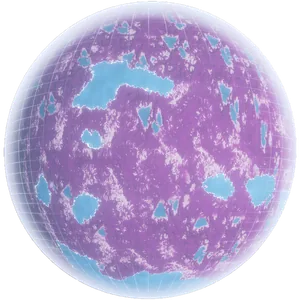
Hologram of an Ethereal Jungle 行星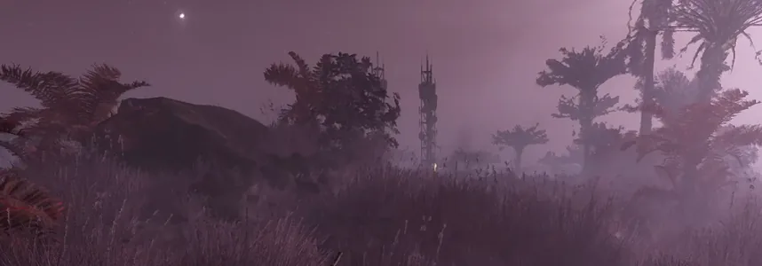
概述 of the 环境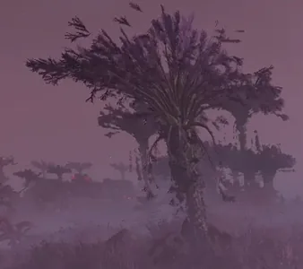
A purple palm tree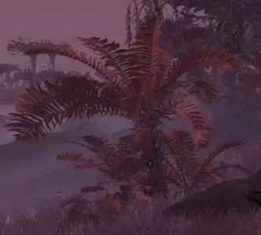
A crimson fern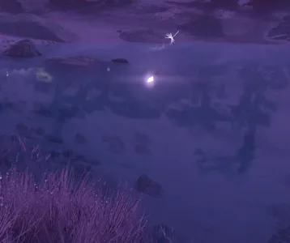
The teal-colored water of this 生物群系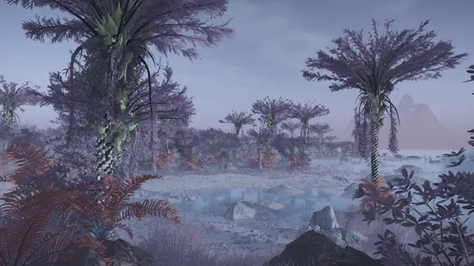
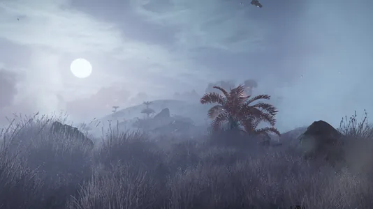
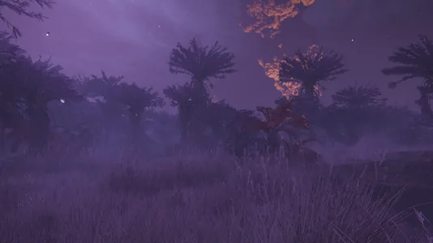
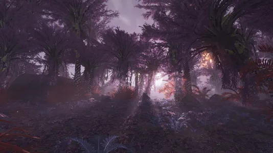
Metropolis
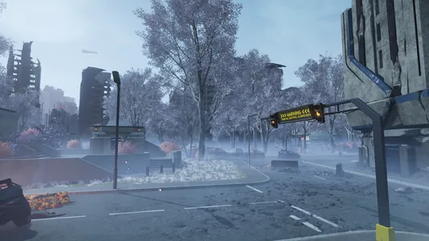
终结族 防御 City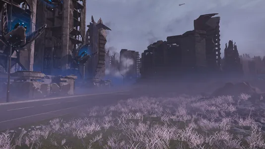
光能者 controlled City
Planets
 Iridica
Iridica- Seyshel Beach
- Ursica XI
- Acubens Prime
- Fort 正义
- Sulfura
 Alamak VII
Alamak VII- Tibit
- Mordia 9
- Emorath
- Shallus
 Vindemitarix Prime
Vindemitarix Prime- Zefia
- Bekvam III
- Turing